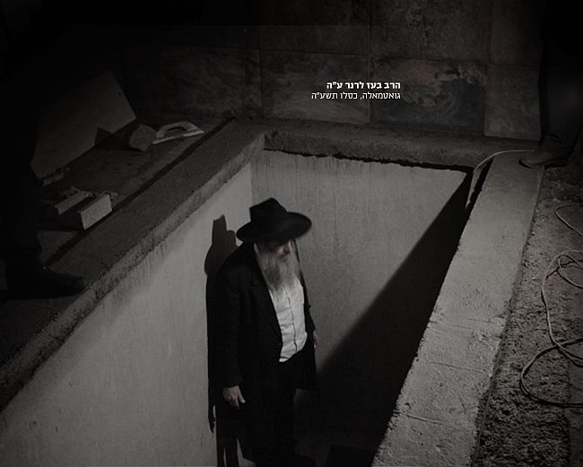

בקעה מצא וגדר בה גדר
בעבודה מאומצת ובמאבק ממושך, הצליח הרה”ח בועז לרנר ע”ה, לשנות את ה’מיינסטרים’ של בניית מקוואות חב”ד ברחבי הארץ והעולם - לתקנם ולהתאימם במדויק לדברי הרבי מלך המשיח שליט”א • קו ברור וחד עובר כחוט המקשר, מפעילותו לתיקון ובניית מקוואות עד לדביקותו בבשורת הגאולה ו’יחי אדוננו’: אמונה מוחלטת
בעבודה מאומצת ובמאבק ממושך, הצליח הרה”ח בועז לרנר ע”ה, לשנות את ה’מיינסטרים’ של בניית מקוואות חב”ד ברחבי הארץ והעולם - לתקנם ולהתאימם במדויק לדברי הרבי מלך המשיח שליט”א • קו ברור וחד עובר כחוט המקשר, מפעילותו לתיקון ובניית מקוואות עד לדביקותו בבשורת הגאולה ו’יחי אדוננו’: אמונה מוחלטת

בתחום המקוואות בפרט, עמדה לנגד עיניו קביעתו המופלאה של הרבי באגרת–קודשו, שבדינים אלו חרגו רבותינו נשיאינו ממנהגם הידוע שלא לפסוק דינים, ופסקו עם הוראות מפורטות. וכלשון הרבי: “ולהעיר ולהאיר עד כמה התענינו בזה רבותינו נשיאינו זצוקללה”ה נבג”מ זי”ע, ונפלא הענין - שאפילו אלו מהם שמכמה טעמים לא רצו לפסוק דינים ועד כדי כך, אפילו כשהי’ הכרח לפסוק דין, מסרו הנוסח לרב שיאמר הוא שכך הוא הדין, יצאו מכלל זה עניני מקוה טהרה, שהתענינו בזה בתשומת לב מיוחדה, שלחו שו”ת, הוראות מפורטות וכו’ וכו’” (אג”ק כרך י”ט אגרת ז’עב)
מכתב מדהים זה נהג ר’ בועז לצטט שוב ושוב, בהדגישו כי לנוכח מילותיו הברורות של הרבי, אין צורך להיות בעל ‘הרגש חסידי’ גדול, כדי להבין כי בכל הקשור לנושא המקוואות יצאו רבותינו נשיאנו מגדרם לעסוק בזה ועד לקביעת הלכה בפועל. ומכיוון שכך, ברור כי דבריהם הקדושים בנושא, וראש לכל: הערותיו והארותיו של הרבי שליט”א אודות המקווה - נחשבים אצלנו, חסידיו, כפסקי הלכה שאין אחריהם כלום!
בקעה מצא וגדר בה גדר
ר’ בועז, שהגיע לנושא המקוואות (בעקבות חלום על הרבי) בשנת תשנ”ג והמשיך לעסוק בכך בשנים הבאות עקב תשובה מיוחדת לה זכה ב’אגרות קודש’ - למד את הדברים לעומקם, ביסודיות שאפיינה אותו, כשלכל אורך דרכו צעד אחר דברי רבותינו נשיאנו, כשהוא מקפיד גם לחקור ולברר היטב את דברי קודשו של הרבי שליט”א ואת הערותיו והארותיו בנושא זה.
לתדהמתו הרבה, הופתע ר’ בועז לגלות כי ברוב מקוואות חב”ד - לא מקובלת ולא מבוצעת בפועל הוראה ותיקון חשוב ועיקרי, עליו מעורר הרבי:
רוב המקוואות החב”דיים בדור האחרון, נבנו על פי רשימתו של הרב יעקב לנדא, שהיה ‘רב החצר’ בבית הרבי הרש”ב. רשימה זו, שנכתבה לבקשת הרבי מלך המשיח ואף הייתה למראה עיניו של הרבי הריי”צ, נדפסה ברבות השנים כהוספה לשולחן ערוך הרב, והייתה למראה עיניהם של בוני המקוואות החב”דיים. אלא שרובם לא ידעו כי בשני מכתבים שכתב הרבי מה”מ לאחר קבלת הרשימה - הציג הרבי חידוש הלכתי, הנוגע למעשה בפועל.
ברשימתו של הרב לנדא, ציין, כי הרבי הרש”ב הורה שמי הגשמים שבאוצר התחתון, יעלו על גדות רצפת המקווה העליונה. הרב לנדא לא מסביר מדוע, אבל מדגיש שכך עשו תמיד כאשר מילאו את האוצר התחתון. במכתב לרב שניאור זלמן גורליק, רבו הראשון של כפר חב”ד (ועל דרך זה מרומז כבר במכתב המענה לרב לנדא), מזכיר הרבי את עדותו של הרב לנדא, שהרבי הרש”ב “רצה שיעלו מי התחתונה על גבי רצפת העליונה”, ומחדש שהסיבה לכך היא מכיוון שבצורה כזאת, הכשר המים השאובים “הרי–זה זריעה באופן היותר מועיל, שאין–צריך השקה כלל לכל הדיעות”.
לאחר שהרבי גילה את דעתו, שהכשרת המים השאובים היא על ידי זריעה במי האוצר התחתון, ולא בהשקה בלבד - שאל הרבי, הן את הרב לנדא והן את הרב גרליק, מה עושים כאשר רוצים לנקות את מקווה העליונה, ומרוקנים ממנה לגמרי את המים? ומסיק הרבי, שבמקרה כזה “יש לסדר שהשאובים יפלו ישר בנקב ההולך לאוצר התחתון, דהיינו זריעה”.
לא כאן המקום להיכנס למשמעות ההלכתית של הדברים, רק זאת נאמר, שכאשר מכשירים את המים באמצעות ‘זריעה’ ולא סומכים רק על ה’השקה’ - המקווה הרבה יותר מהודר, לכל הדעות בראשונים. אבל מעבר לחידוש הרעיוני, יש באגרות הללו פסיקה הלכתית מהרבי, שכאשר רוקנו את המקווה העליונה לגמרי - יש לבצע את הזריעה ישירות לתוך נקב הבור התחתון.
מכיוון שהרב לנדא והרב גרליק לא פרסמו ברבים את המכתבים שקיבלו מהרבי, נותרו הללו עלומים במשך שנים רבות. כך השתרשה והתקבלה במשך עשרות שנים, במקומות רבים בארץ ובעולם - בניית מקווה חב”ד באופן שאינו תואם להוראתו ותיקונו המיוחד של הרבי המופיע במכתב הנ”ל…
כך נמשך הדבר שנים רבות, עד לפרסום אגרות הקודש הללו - בתחילה בהוספות לכרכי לקוטי שיחות, ומאוחר יותר בסדרת האגרות קודש; וגם לאחר שהתפרסמו האגרות, לא שמו לב לחידושו העצום של הרבי, וההשלכות המעשיות העולות ממנו, עד שבא הרב בועז לרנר והביא את הדברים לתשומת לבם של רבני חב”ד.
ר’ בועז נדרש לעבודה מאומצת ולמאבק ממושך עד שזכה “לקיים דברי חכמים” - למלא את הוראתו של נשיאנו שליט”א ולבצעה בפועל ממש. עבודתו הוכתרה בהצלחה רק כעבור שנים ארוכות - כאשר הודו לו על כך רובם ככולם של רבני חב”ד בארץ ובעולם, וב”ה כיום התקבל והשתרש ברוב מקוואות חב”ד, תיקון המקווה בהתאם להוראת הרבי.
מיישם את אמת התורה במציאות העולם
ר’ בועז היה בבחינת ‘עסקן בדברים’, כאשר מלבד התעמקותו בענייני ופרטי ההלכה ודקדוקיה, ניחן גם בחוש התמצאות והמצאה בלתי רגילה, כיצד ליישם בפועל הנחיות הלכתיות כדי שיתחברו נכון עם המציאות. בדרכו זו, השכיל ר’ בועז למצוא פתרונות פרקטיים לבעיות טכניות שונות שהתעוררו בבואו לתיקון המקוואות בהתאם לדברי הרבי.
גם בבואו לתקן את הוראתו של הרבי דלעיל, הקשו עליו רבים: כיצד ניתן לבצע למעשה את הזרעת מי העיר לתוך האוצר (אלו שלא יכולים להשאיר מי אוצר על רצפת המקווה העליונה), והרי באופן כזה יתחלפו המים במהירות, ולא יישארו ‘מי גשמים’ (כטענת הראב”ד)?
לפתרון בעיה זו, מצא ר’ בועז פתרון פשוט ונפלא. לפני תעלת ההמשכה, דרכה נשפכים מי הברז לתוך המקווה, הוא קבע ברז שמווסת את זרימת המים בשני רמות לחץ. הוא בנה את תעלת ההמשכה בצורה מאוד מדוייקת מעל החור המחבר את המקווה העליונה עם אוצר מי הגשמים, כך שבשלב ראשון פותחים את הברז בלחץ נמוך, ואז המים נשפכים היישר לאוצר מי הגשמים; ולאחר שמי האוצר עלו על רצפת המקווה העליונה - מעבירים את הברז למצב של לחץ גבוה, ואז המים מדלגים על הנקב וממשיכים להזריע את המים היישר לתוך מי האוצר שעלו למקווה העליונה.
(כמובן שבמסגרת זו בלתי אפשרי להאריך ולפרט את הדברים בהסברת והרחבת הביאור, אותו יוכל למצוא המעיין - בקונטרס “מקווה על גבי האוצר” שחיבר ר’ בועז)
הבא לטהר - בשליחות הרבי - מסייעין בידו
ר’ בועז הוזמן לבניית מקוואות חב”ד בכל רחבי ארץ הקודש. סיפורים ומופתים רבים התגלגלו סביב עבודתו זו. רק לדוגמא: בקהילת חב”ד בחיפה, היו כמה משפחות שלא זכו לילדים במשך זמן ארוך. תשובות הרבי באגרות קודש הבהירו להם את הקשר למקווה ותיקונו. ר’ בועז הוזמן, המקווה תוקן כשיטת חב”ד עם כל ההידורים והמשפחות נפקדו בזרעא חיא וקיימא.
גם סביב בניית מקוה ‘מי מנחם’ שבכפר חב”ד ב’ התהלכו מופתים מיוחדים (שפורסמו בחוברת מיוחדת שיצאה סמוך להקמתו). מקווה זה נבנה בזכות נשים צדקניות ע”פ הוראותיו של הרבי וברכותיו באגרות קודש. ר’ בועז סייע בכל מאודו לבניית המקוה המפואר והמהודר במיוחד, כשהוא משתמש בשילוב הנדיר של בקיאות בהלכה, ידע בתחום הבניה ויצירתיות במציאת פתרונות.
במהלך ימי ה’שבעה’, הגיע בין המנחמים גם הרב מנחם מענדל גלוכבסקי, רב קהילת חב”ד ברחובות שסיפר: ר’ בועז היה בעל ראש מקורי וידע תמיד למצוא ‘פטנטים’ שונים ולפתור באמצעותם בעיות הלכתיות וליישב את ההידורים בבניית המקוואות.
את סיום בניית המקווה נהג לחגוג באמירת ‘לחיים’ ובריקוד חסידי. זכורני כיצד בסיימו לבנות את א’ המקוואות, היה ר’ בועז בשמחה והתעוררות גדולה ומרוב התרגשות החל לברך את הפועלים שעבדו במקום. קבלן הבנייה שהיה חסיד חב”ד ניגש אליו וביקש ברכה להולדת בת. ר’ בועז השיב לו “אתה חב”דניק - תבקש ברכה רק מהרבי!”…
אך אז נזכר ר’ בועז בחלוקת הדולרים בה הביא אל הרבי את חברו לטייסת חיל האוויר, שגם הוא ביקש ברכה מהרבי להולדת בת והרבי השיב לו “כשאתה טס באוויר - תזכור על–דבר הקב”ה, זה קל יותר מאשר כשנמצאים למטה” ואכן, אותו טייס התפלל בעת הטיסה ונולדה לו בת.
על יסוד תשובה זו של הרבי - אמר ר’ בועז לאותו קבלן שיעלה לגג המקווה - שם המקום הגבוה שבנמצא ויתפלל ויבקש שם ברכה, כעבור תקופה נולדה גם לו בת…
מסעות טהרה חובקי–עולם
ר’ בועז כיתת רגליו בכל רחבי העולם עבור בניית מקוואות חב”ד. השלוחים בהודו, בסרי–לנקה, במרכז אמריקה, באוסטרליה ועוד זוכרים את התמדתו ועקשנותו ובעיקר את התמסרותו לתיקון כל פרט וכל הידור בצורה הכי מושלמת שרק יכולה להיות.
בעשור האחרון השקיע ר’ בועז רבות בבניית מקוואות בבתי חב”ד במדינת הודו, על כך מספר ר’ ישראל בוכבינדר, שאז, לפני כעשור - היה מטייל בהודו וכיום, אחרי התקרבותו וחזרתו בתשובה - הוא נמנה בעצמו על צוות השלוחים של בתי חב”ד במדינה:
ר’ בועז לא הסתפק בעבודתו ומטרתו ‘הרשמית’ לשמה הגיע. בתקופת שהותו בבתי חב”ד הוא הפך ממש ל’שליח’ פעיל ותוסס במקום. מידי לילה הוא התיישב להתוועד יחד עם המקורבים והמטיילים. בהתוועדויות אלו החדיר בהם התקשרות לרבי מלך המשיח וגילה את הניצוץ היהודי החבוי בקרבם, כשהוא דורש מהם להבעירו בקיום תורה ומצוות, לימוד חסידות ושינון תניא בע”פ.
במקרים רבים שמר ר’ בועז על קשר עם חלק מהמשתתפים בהתוועדויות אלו וליווה אותם בהמשך התקרבותם וחזרתם בתשובה. חלקם אף חזרו ונפגשו עמו בארה”ק והגיעו לשבתות בביתו. מכל ‘מקורב’ מתחיל דרש ר’ בועז לנסוע בהקדם האפשרי אל הרבי ל–770 ואכן, הגעתם הראשונה של רבים מהם לרבי נזקפת לזכותו.
הרה”ח שימי גולדשטיין שליח הרבי בעיר פושקר שבהודו, נזכר כיצד הגיע ר’ בועז לבניית המקווה בבית חב”ד שלו, היה זה בסיום עונת ה’מונוסונים’ בה יורדים הגשמים בהודו בימים מסוימים ומדוייקים ביותר, כשלא נראה סיכוי לירידת גשמים מחוץ לימים אלו. ר’ בועז כתב לרבי, קיבל ברכה והבטיח כי יירדו גשמים.
למרות לגלוגם של ההודים המקומיים הוא המשיך בבנייה כרגיל, (בינתיים הוא נסע לכמה ימים, לבניית המקווה בבית חב”ד במומבאי אצל השליח הרב גבי הולצברג הי”ד) ואכן, בסופו של דבר, העננים הגיעו בפתאומיות ומי הגשמים מילאו את אוצר המקווה.
מספר הרה”ח דני ווינדרבאום שליח הרבי בקאסול: אני נזכר באפיזודה מעניינת הממחישה כיצד “שלוחו של אדם כמותו” ממש. היה זה כשהגיע ר’ בועז לרנר כדי לבנות את המקווה בבית חב”ד, כשראו תושבי הכפר את הדרת פניו וזקנו המלבין של ר’ בועז כשהוא לבוש בכובע ובסירטוק - הם הביטו עליו ביראה, כשהם מנסים להשוות בינו לבין תמונתו של הרבי המתנוססת על הבניין. הוא היה נראה להם כל כך דומה, עד שהם ניגשו לשאול אם אכן זהו ‘הבוס הראשי’ - הרבי שליט”א, שהגיע לכאן לביקור?…
גאונות ובקיאות עצומה בתחום
מספר ידידו הרה”ח שמעון ויצהנדלר ראש ישיבת חב”ד בראשון לציון: ר’ בועז התברך בחוש הנדסי ויכולת המצאה מפותחת בפרקטיקה המעשית של בנייה ותכנון. את כישרונותיו אלו, הוא רתם לצורך בניית מקוואות חב”ד, דווקא כאלו התואמים במדויק לשיטתו של הרבי. הוא צלל לעומק הסוגיות הסבוכות בש”ס ובראשונים של דיני המקוואות, ובמיוחד בתורתם של רבותינו נשיאנו הק’.
בוני המקוואות בארץ הכירו אותו היטב והעריצו את עבודתו המסורה שחיברה בקיאות עצומה בהלכה ובהידורים לצד חוש ההמצאה שלו שנתן פתרונות יצירתיים לעקוף קשיים שונים ומשונים בכל תחום ותחום, הן בתחום שיפוץ ותיקון מקוואות קיימות, אך בעיקר בניית מקוואות חדשות בשיטת ‘מקוה ע”ג האוצר’.
גדולי תורה מכל החוגים ורבני אנ”ש ששוחחו איתו בנושא נדהמו מבקיאותו העצומה בשיטות השונות ובמיוחד בעמקות הנפלאה שהבין וירד לשורשם של דברים.
בחודש ניסן תשע”ד נפגש ר’ בועז עם האדמו”ר מצאנז במאפיית המצות בקרית צאנז בנתניה. הוא ניגש אליו וביקש להעניק לו במתנה ‘דולר’ מהרבי שליט”א. בהמשך התגלגלה השיחה לדיני מקוואות ובמשך חצי שעה רצופה שוחח ר’ בועז עם האדמו”ר בעמקות נפלאה על נושאים מורכבים בדיני מקוואות ובמיוחד על תשובת בעל ה’דברי חיים’ מצאנז בעניין, במהלך השיחה ניכרה התפעלותו העצומה של האדמו”ר מ’אברך חסידי’ שיד ושם לו בהלכות חמורות אלו.
קונטרס מקיף “מקווה על גבי האוצר” לביאור שיטת הרבי
בשנותיו האחרונות שקד ר’ בועז על עריכת חיבור תורני שיסכם בבהירות את הסוד הנפלא של מקווה זה, בכדי להוכיח הלכתית עד כמה דווקא בניית מקווה מסוג כזה היא המהודרת והמושלמת ביותר, ללא כל סרך של חששות הלכתיות ואפילו של מנהגי ישראל. הוא הצליח להוכיח כי דווקא במקווה זה יש גם את ה’זריעה’ יחד עם ‘השקה’ ויחד עם טבילה בתוך האוצר עצמו, כך שכל הפקפוקים שאולי היו קיימים - סרו מאליהם.
ר’ בועז תכנן להוציא ספר מקיף בנושא, הוא הכין את תבניתו הכללית והחל לעבוד על עריכתו בפועל, כשהוא נעזר במיוחד בידידו ורבו משכבר הימים, הגה”ח הרב ברוך בועז יורקוביץ מד”א שיכון חב”ד בלוד, שיחד עמו ליבן ובירר נושאים בתחום המקוואות.
בתור התחלה פרסם את הקונטרס “מקווה ע”ג האוצר” (שעבר את הגהתו של הגה”ח הרב שלמה זלמן לבקיבקר) בכדי לתת טעימה לכל אחד ואחד להבין במה מדובר. מיד עם הופעת הקונטרס הוא עורר התעניינות עצומה בקרב כל בוני ומומחי המקוואות. גל אדיר של תגובות זרמו אליו בעקבות הקונטרס. הערות, הארות ודברי שבח מחוגים מחוץ לחב”ד, שלראשונה הבינו לעומק את חידושו הנפלא של המקווה בשיטת חב”ד.
הוא המשיך והתקדם בעבודתו על הספר המלא, אך למרבה הצער בעיצומה של העבודה העיונית, לצד עבודה מעשית בבניית המקוואות - נפטר ר’ בועז בפתאומיות, כשהוא מותיר אחריו במחשבו האישי עשרות קבצים של רשימות וקיצורים, בהם החל ר’ בועז לפרט את תוכן הספר. חומר זה דורש עוד עבודה רבה כדי להביאו לשלב הוצאתו לאור בצורה מסודרת - ועוד חזון למועד.
אחרי פטירתו, מצאו בני המשפחה עותק ממהדורתו הראשונה של הקונטרס “מקווה ע”ג האוצר” כשעליו רשומים תיקונים והערות בכתב ידו, אותם ציין לעצמו לאור מסקנותיו משלל תגובות והערות שקיבל. הערות אלו תוקנו ונוספו במהדורתו המחודשת של הקונטרס, שיצא לאור לרגל חתונת בנו בשנה האחרונה - בתוספת ‘מבוא’ מאלף מאת הרה”ח שמעון ויצהנדלר, שסייע רבות לר’ בועז בעריכת הקונטרס.
להמשיך לעולם את נשמות “חיילי בית דוד”
“זה מה שיציל את הדור” כך היה שגור בפי ר’ בועז, תוך כדי דיבורו בלהט על שיטות והידורי בנייתם של מקוואות חב”ד. זהירותו והקפדתו הדקדקנית על כל פרט ופרט בנושא, לא נבעה רק ממומחיותו הגדולה בתחום והיותו קבלן חרוץ ודייקן במלאכתו. היה ניכר כי הוא עושה זאת כמי שהעניין אכפת ונוגע לו אישית. הוא היה חדור באמונה כנה כי התיקונים, השיפורים וההידורים עליהם עמל והתייגע ואף נאבק למען ביצועם - אכן יתנו את אותותיהם והשפעתם המכרעת לטהרת וקדושת הדור הצעיר.
בהזדמנות סיפר ר’ בועז כי בהתוועדות עם השליח הרה”ח גרשון מענדל גרליק הוא הסביר מדוע הרבי הרש”ב תיקן תקנה מיוחדת של בור על גבי בור - היות וקם דור חדש ובו נשמות של “חיילי בית דוד” שתפקידם להביא את המשיח, לכן, כדי להוריד נשמות נעלות שכאלו, צריך את התקנה הקדושה של בור על גבי בור, כדי שהטבילה תהיה בשיטה הכי מהודרת שלא הייתה כדוגמתה מאז ומעולם.
רעיון זה היה נר לרגליו, בכל הקשור למהפכת מקוואות חב”ד בארץ ישראל וברחבי העולם.